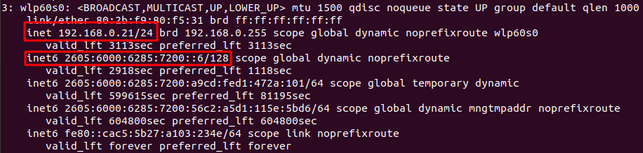

Layer 3
inet - IPv4 (decimal notation)
The more commonly used IP address
Separated by 4 octets (8 bits each, for a total of 32 bits)
Can hold up to 2^32 addresses ~ 4.3 billion (not very many)
inet6 - IPv6 (hexadecimal notation) (128 bits)
Can hold up to 2^128 addresses ~ 3.4*10^38 addresses (very many)

How can we still use IPv4 if we are out of address space? NAT
Network Address Translation
Each device on a network is assigned a private IP Address, and talks out of the same public IP address- Private IP addresses:
- Class A (Big businesses)
- Class C (common household and small business use)
- Any IP address outside of these ranges are public IP addresses
- Public IP address - What you rent from your ISP